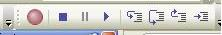

Debugging in GeneXus
Scope : WebWith the GeneXus IDE you can debug GeneXus code, such as with other development environments (Visual Studio, NetBeans, etc.) you can debug native code (C#, Java, Ruby, etc.). To debug the application you have to add a breakpoint and run the application. When the breakpoint is found GeneXus gets the focus and you can check attribute and variable values using the "watch" tool window. In addition, the "Call Stack" window shows you the objects excecuted from beginning of the execution. Basic steps to debug your code:
Objects added to the debug tool window are generated again with debug information.
 Important:
Note:
See alsoProfiling in GeneXus (GeneXus 16 Upgrade 7 or prior)
|

| Backlinks | ||
| Configuration options | GeneXus Debugger and Profiling common issues | Profiling in GeneXus (GeneXus 16 Upgrade 7 or prior) |